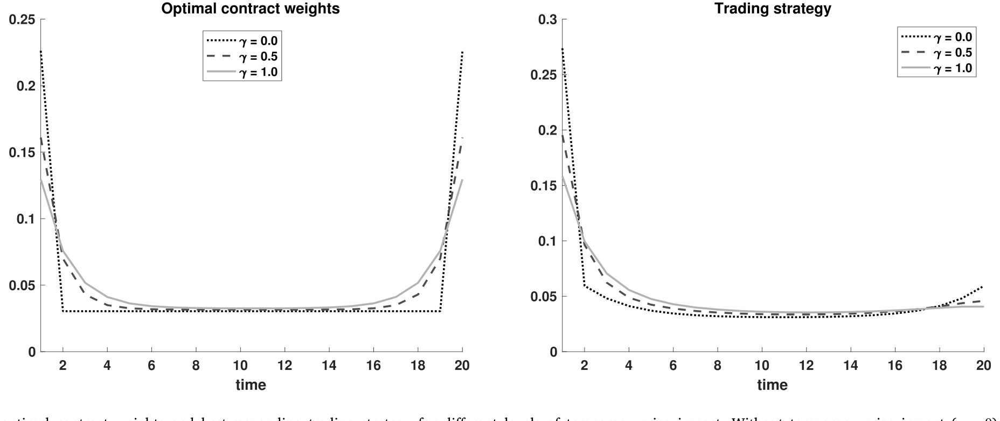
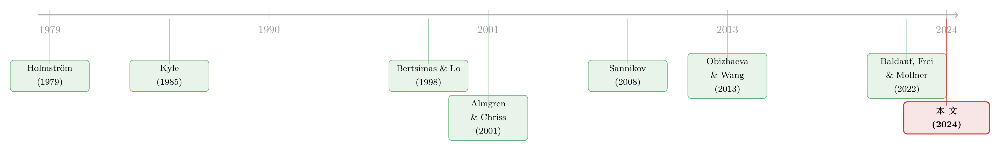

看不见交易商的手：一份大宗交易合约该长成什么形状
本文读的是 Baldauf, Frei & Mollner (2024, Journal of Financial Economics)：当养老金把一笔大单外包给交易商执行、却只能盯着市场价格（看不见交易商到底怎么下单）来付钱时，最优的「加权平均价」合约不是业内常用的 TWAP，也不是 MOC，而是一条对称的 U 形——把重量压在交易窗口的头和尾。在连续时间极限下，它简化成一个惊人干净的形状：两端各放一个等大的「原子」，中间是一条常数密度。
1 引言：两种摩擦，第一次被放在同一张桌子上
设想你管着一只养老金，今天要买入一大笔某证券。你当然可以自己慢慢买——这正是「最优执行 (optimal execution)」这条文献研究了几十年的问题：因为有 价格冲击 (price impact)，一次性砸下去会把价格买飞，所以聪明的做法是把一张「母单 (parent order)」拆成若干「子单 (child order)」，分散在一段时间里执行。
但现实里，养老金、共同基金、捐赠基金往往不自己做这件事，而是把执行外包给一家交易商 (dealer)。于是事情就有了第二层摩擦：交易商的利益和你并不一致。这就是 代理冲突 (agency conflict)。
这篇论文真正的野心，是把这两种摩擦——价格冲击与代理冲突——第一次放进同一个模型里，看它们如何相互纠缠。在此之前，最优执行文献几乎只谈前者，假设你自己执行；而委托代理文献谈后者，却很少触及交易里那套精巧的价格动态。
外包是怎么定价的？实务中，一笔「大宗交易 (block trade)」常常按执行窗口内市场价的某种加权平均来结算。最常见的两种：一种是按窗口内的 时间加权平均价 (time-weighted average price, TWAP) 结算，即所谓「保证 TWAP 合约」；另一种是按窗口结束时刻的收盘价结算，即「保证收盘价合约 (market-on-close, MOC)」。这些合约之所以存在，一个经济学上的理由是交易商厌恶风险——大单风险大，加上监管要求交易商为敞口持有资本，他们确实有动机把一部分价格风险转回给客户。
可问题来了：这两种业内通用的合约，对客户而言是最优的吗？哪怕只是在「加权平均价」这一类里最优？如果不是，客户怎样才能为自己做得更好？
这个问题绝不是吹毛求疵。Nasdaq (2022) 与 SIFMA (2021) 估计，美国股票市场上机构投资者每年的交易成本约 $70 billion，其中几乎全部来自价格冲击。而执行环节的利益冲突有多真实？FINRA 第 5270 号规则一边禁止交易商利用「迫在眉睫的大宗交易」的非公开信息抢跑 (front-running)，一边又开了一个口子：为「履行或便利客户大宗订单的执行」而做的交易不在此限——这就给「下单时机」留足了博弈空间。2024 年摩根士丹利为大宗交易调查支付 $249 million 和解金，正是这种冲突真金白银的注脚。
2 模型设定：一个委托人，一个代理人，一条价格
这是一篇理论论文，核心是一个委托代理模型。粗略地说，它把一个经典的价格冲击模型（à la Bertsimas & Lo, 1998；Almgren & Chriss, 2001）和一个经典的隐藏行动契约模型（à la Holmström, 1979）焊在了一起。
委托人（客户）：需要买入固定数量的证券，归一化为买 1 股。她是风险中性的。
代理人（交易商）：具有不变绝对风险厌恶 (constant absolute risk aversion, CARA)，系数为 \(\lambda\)，效用函数
$$u(w) = -\exp(-\lambda w).$$
时间线：在 \(t=0\)，客户提出一份合约，交易商接受或拒绝。合约规定客户将在 \(T+1\) 时刻以某个价格从交易商手中买入 1 股，而这个价格是市场价 \((p_1,\dots,p_T)^\top\) 的函数。如果交易商接受，他就在交易期 \(t\in\{1,\dots,T\}\) 内到市场上买入对冲，\(x_t\) 是第 \(t\) 期买入的股数，且必须 \(\sum_{t=1}^T x_t = 1\)。
关键摩擦——隐藏行动：客户看不见交易商在市场上那一连串具体的对冲交易 \(x_t\)，只能看见实现出来的市场价时间序列。换句话说，价格是交易商行动的信号，但是带噪声的信号。
价格怎么动？论文采用了那条几乎是行业标配的线性动态：
这里 \(\theta\ge 0\) 是永久价格冲击，\(\gamma\ge 0\) 是临时价格冲击，\(p_0\) 是初始价位，\(\varepsilon_s\) 是第 \(s\) 期独立同分布的价格冲击，\(\varepsilon_s\sim N(0,\sigma^2)\)，\(\sigma>0\)。为避免退化，假设 \(\theta\) 与 \(\gamma\) 至少有一个严格为正。
请记住 \(a1\) 和 \(a2\) 的区别，这是全篇的胜负手。临时冲击像水里的涟漪，你这一桨划下去水面凸起，桨一抬就平了；永久冲击像往池子里倒水，每倒一瓢，水位就永久抬高一截，而且后面所有的价格都被垫高了。正是后者，让「先买还是后买」这件事变得真正动态——时间的先后顺序开始有了实质含义。
客户的问题。客户要选一份合约 \(\boldsymbol{\tau}\) 和一条「建议给交易商的交易策略」\(\boldsymbol{x}\)，在个体理性 (IR) 与激励相容 (IC) 两个约束下最小化自己的期望支付：
$$\min_{\boldsymbol{\tau}\in\mathcal{T},\,\boldsymbol{x}\in\mathcal{X}} \;\mathbb{E}[\tau(\boldsymbol{p})]$$
$$\mathbb{E}\!\left[u\big(\tau(\boldsymbol{p})-\boldsymbol{x}\cdot\boldsymbol{p}\big)\right]\ge u(0) \tag{IR}$$
$$\boldsymbol{x}\in\arg\max_{\hat{\boldsymbol{x}}\in\mathcal{X}}\;\mathbb{E}\!\left[u\big(\tau(\boldsymbol{p})-\hat{\boldsymbol{x}}\cdot\boldsymbol{p}\big)\right] \tag{IC}$$
直觉很顺：交易商的收入是客户付的 \(\tau(\boldsymbol{p})\)，成本是他在市场上对冲的 \(\boldsymbol{x}\cdot\boldsymbol{p}\)，二者之差就是他的利润。(IR) 保证他愿意接单（至少不亏），(IC) 则因为隐藏行动而必不可少——客户无法直接命令交易商怎么交易，只能用合约把「希望他走的那条路」变成他自己最优会走的路。
合约集。剩下的就是限定客户能从哪一类合约里挑。论文给了三种：
- 无限制集 \(\mathcal{T}_{\text{all}}\)：任意可测函数。理论上有趣，但这里会冒出一个经典的「Mirrlees 噩梦」——在正态噪声、合约形式不受限的道德风险里，代理摩擦几乎消失：客户可以用「以极低概率施加极大惩罚」的合约把第一最优 (first-best) 逼近到任意精度。这种合约既不现实，又对模型设定的微小偏差极度脆弱。所以它只是个理论参照。
- 加权平均价合约 \(\mathcal{T}_{\text{wa}}\)（主战场）：合约就是一个权重向量
$$\boldsymbol{\tau}\in\left\{(\tau_1,\dots,\tau_T)^\top\in\mathbb{R}^T \;\middle|\; \sum_{t=1}^T \tau_t = 1\right\},$$
客户付给交易商 \(\sum_{t=1}^T \tau_t p_t\)。业内的两种常用合约正是它的特例：\(\boldsymbol{\tau}^{\text{TWAP}}=(\tfrac1T,\dots,\tfrac1T)^\top\)，以及 \(\boldsymbol{\tau}^{\text{MOC}}=(0,\dots,0,1)^\top\)。
- 仿射合约 \(\mathcal{T}_{\text{affine}}\)：加权平均的超集，留在线上附录里讨论。
作者把分析定位得很清楚：在与现行合约「复杂度相当」的那一类里，寻找最好的合约。这一步「自我设限」其实是论文最讲究的地方——它放弃了那个不现实的理论最优，转而问一个实务上真正可落地的问题。
3 先看没有摩擦的世界：第一最优就是「匀速买」
要理解代理冲突改变了什么，先得有个干净的基准。把隐藏行动这层摩擦拿掉——假设客户能看见交易商的交易，也不限制合约形式。
此时客户可以用一份「强制合约」：只要交易商偏离建议的策略就罚他一大笔。由 \(u\) 的凹性，满足 (IR) 的最优做法是让交易商恰好不赚不亏，即在他听话时令 \(\tau(\boldsymbol{p},\boldsymbol{x})=\boldsymbol{x}\cdot\boldsymbol{p}\)。代入目标，客户的问题塌缩成
$$\min_{\boldsymbol{x}\in\mathcal{X}}\;\mathbb{E}[\boldsymbol{x}\cdot\boldsymbol{p}].$$
这正是一个纯粹的最优执行问题。它的经典解众所周知：在每一期买入等量（匀速执行），借此把永久冲击带来的「自己把价格越买越高」的成本摊平。换句话说，第一最优下，交易商应当 \(x_t=1/T\)，恰好等于 TWAP 的形状。
这里埋下了一个非常漂亮的伏笔：如果没有代理冲突，TWAP 式的匀速执行就是对的。 所以业内偏爱 TWAP 并非毫无道理。问题在于，一旦交易商的手藏到了暗处，匀速还成立吗？
4 核心张力：交易商想「前置」，客户该怎么把他掰回来
现在把隐藏行动放回去。这是全篇的引擎，我们慢慢拆。
首先，看交易商的激励。 给定一份加权平均价合约 \(\boldsymbol{\tau}\)，他的利润是 \((\boldsymbol{\tau}-\boldsymbol{x})\cdot\boldsymbol{p}\)。一个保底策略是让自己的交易权重完全镜像合约权重，即 \(\boldsymbol{x}=\boldsymbol{\tau}\)，这样稳赚零利润。但他能做得更好：把交易量从期望价格高的时期挪到期望价格低的时期——在便宜的时候多买，在贵的时候少买，差额就是利润。
接着，一个自然的问题是：哪些时期价格高？ 永久冲击 \(\theta\) 给了答案。因为每一笔买入都把后面所有价格永久垫高，所以越晚的期望价格越高。于是交易商有了一个明确的动机：前置交易 (frontloading)——把交易权重往前压，早买、便宜买。这个「前置」倾向并非纸上谈兵，论文指出它与外汇 (Bloomberg, 2016)、利率掉期 (Risk.net, 2021)、期权 (Bloomberg, 2019) 等多个资产类别里观察到的交易商行为一致。
然后，轮到客户。 她面对两股方向相反的力：
- 一方面，永久冲击让价格在窗口内一路走高。如果交易商的交易策略（因而价格路径）是固定的，客户当然偏好在合约里给早期更高的权重——早期价格低，多按早期价结算更省钱。
- 但另一方面，交易商的策略是内生的。而且由于永久冲击，前置的交易策略会抬高所有价格。客户其实希望交易商别那么前置、走得更平缓一些；可鉴于交易商天生的前置冲动，要把他往后拉，客户就得在合约里给后期更高的权重作为对冲。
于是反转出现了。 这两股「想压早期」和「想压后期」的力量叠加，产物既不是 TWAP，也不是 MOC，而是一条对称的、U 形的最优合约：
$$\tau^*_1 \ge \tau^*_2 \ge \cdots \ge \tau^*_{\lceil T/2\rceil} \le \cdots \le \tau^*_{T-1} \le \tau^*_T,$$
并且 \(\tau^*_t = \tau^*_{T+1-t}\)（对称）。论文证明：永久冲击会加深 U 形的严峻程度，而临时冲击与交易商的风险厌恶会削弱它。直觉上，永久冲击是这一切力量的源头，所以它既加深合约的 U 形，也加剧交易商最终的前置；临时冲击和风险厌恶则给交易商引入了别的动机，方向相反。
别把这条 U 形误读成「客户在赌价格」。客户是风险中性的，她不在乎价格波动本身。U 形纯粹是激励的产物：两端的高权重，是同时回应「自己想占早期便宜」和「想把交易商从前置里拉回来」这两件事的最经济的方式。
5 连续时间极限：一个惊人干净的形状
离散时间下 \(\boldsymbol{\tau}^*\) 虽有闭式解，却复杂难读。真正让这篇论文「好看」的，是它的连续时间极限。在这个极限里，最优合约坍缩成一个极简的形状，可以看成 U 形的极端版本：
在两个端点时刻各放一个等大的「原子 (atom)」，中间所有内点时刻是一条常数密度。
而交易商对此的最优反应同样干净：内点也是同一条常数密度，两端各有一个原子——但初始端的原子是终端原子的 3 倍，这正是他前置冲动的精确刻画。
这一节里还藏着我认为全文最反直觉的一个结论：
在连续时间极限下，临时价格冲击 \(\gamma\) 对最优合约完全没有影响。 为什么？因为它触发了两股恰好抵消的力：一方面，临时冲击抬高价格、抬高客户成本（若交易商交易固定）；另一方面，临时冲击又部分抵消了交易商的前置冲动（早买的临时成本更高，逼他买得平缓些），反而降低客户成本。两相抵消，净效应归零。相应地，两端原子的质量——也就是 U 形的严峻程度——只随永久冲击递增，随风险厌恶递减。
下图把这件事画得很清楚：在不同的临时冲击水平下，最优合约权重与交易商的最优反应策略各自长什么样。可以直观看到合约两端的「翘起」与交易商前置的那一端。

Figure 2: The optimal contract weights and best-responding trading strategy for different levels of temporary price impact. Without temporary price im
6 这能省多少钱？
理论再漂亮，也得落到一个「so what」。作者做了一个量级测算，用「实施差额 (implementation shortfall)」衡量交易成本，把最优合约与两种常用合约对比。结论是：在现实参数下，
- 最优合约的交易成本比保证 TWAP 合约低
9.8%； - 比保证 MOC 合约低
40.1%。
对一笔价值 $100 million 的交易，省下的钱可能是几十万美元的量级。作者很克制，没有把这个数字吹成精确的福利估计，但方向是明确的：哪怕只在「加权平均价」这一类合约里换个形状，都有可观的改进空间。 这正是这篇论文给实务最直接的建议——别在 TWAP 和 MOC 之间二选一，把权重往两端的 U 形挪一挪。
7 文献脉络：从「怎么执行」到「替谁执行」
把这篇论文放回它的坐标系，能看得更清楚。
第一条线，是最优执行。 Bertsimas & Lo (1998) 与 Almgren & Chriss (2001) 奠定了「给定一个外生的价格冲击模型、求如何把大单在时间上铺开」的范式，Obizhaeva & Wang (2013) 进一步刻画了供需动态。本文的第一最优正好等价于这样一个问题，所以它在基准里复刻了这条文献的经典结论（匀速执行）。但本文的重心在别处——它要解的是第二最优 (second-best)，那里隐藏行动才是主角。
第二条线，是金融契约与道德风险。 从 Holmström (1979) 的道德风险与可观测性，到 Holmström & Milgrom (1987)、Sannikov (2008) 的连续时间委托代理，再到 Hellwig & Schmidt (2002)、Biais et al. (2007) 对「离散逼近连续」的分析——本文的连续时间极限正是站在这条传统上。委托代理在金融里常见的两个变体是委托组合管理（Bhattacharya & Pfleiderer, 1985；Carpenter, 2000；Buffa et al., 2022）和委托资产管理（DeMarzo & Fishman, 2007；DiTella & Sannikov, 2021），而本文里代理人做的是一件不同的金融任务：调度一笔大单的执行。
最关键的坐标，是作者自己的前作 Baldauf, Frei & Mollner (2022)。 那篇文章反过来走：先拿定一份常用合约（保证 VWAP），再去推导「什么样的市场模型能让它最优」，结论之一是价格冲击必须没有永久成分。本文走的是相反方向——先给定一个允许永久与临时冲击并存的标准市场模型，再推导最优的加权平均价合约。让永久冲击进场，是本文的关键创新：它把问题变成了真正动态的（时间顺序开始重要），而永久冲击的重要性在理论（Kyle, 1985）与实证（Biais et al., 2005）上都得到过反复确认。

顺带一提，本文刻意把模型设成「交易商只做中介、不持有自营头寸」（\(\sum_t x_t=1\)），从而避开了双重交易 (dual trading) 文献（Röell, 1990；Fishman & Longstaff, 1992；Bernhardt & Taub, 2008）里那种「抢跑或并行交易」的冲突，专注于对冲时机这一种摩擦。与之相对，Edelen & Kadlec (2012) 研究的是代理交易（客户付实际执行成本），而本文是本金交易（价格事先约定）——这一区分对理解贡献至关重要。
8 评论与延伸（Q&A + 研究方向）
(a) 几个可能的疑问
Q：U 形合约和 MOC、TWAP 到底差在哪？为什么不是其中之一？
TWAP 是匀速权重 \((1/T,\dots,1/T)\)，MOC 是全压终点 \((0,\dots,0,1)\)。本文的最优合约对称且两端高、中间低，介于两者之间又不等于任何一个。直觉是：客户既要利用早期低价（像 TWAP 那样给早期份量），又要用后期权重把交易商从前置里拉回来（这点和 MOC 同向但远没那么极端）。两种诉求叠加，自然形成 U 形。
Q：风险中性的客户，为什么会容忍交易商赚走利润？
(IR) 约束下，客户只需保证交易商「不亏」即可接单。交易商之所以能赚到正利润，恰恰是因为隐藏行动——客户无法把他的前置行为完全管住。换句话说，那笔利润是信息租 (information rent) 的近亲：是隐藏行动这层摩擦的代价，而非客户主动让利。
Q：「临时冲击不影响最优合约」这个结论稳健吗，还是连续时间的人为产物？
它是连续时间极限下两股力恰好抵消的结果，作者诚实地标明了这一点。在离散时间里，临时冲击仍会削弱 U 形——只是当 \(T\to\infty\) 时净效应趋于零。所以这更像一个干净极限下的「巧合等式」，读者不该把它外推成「临时冲击在任何场景都无关紧要」。
Q：模型假设客户能观测到完整的市场价序列，这对所有资产类别都成立吗？
不成立，作者自己点明了。这对股票这类透明、有公开成交数据的资产合适；但外汇等更不透明的市场缺数据，无法在价格上随意签约。作者的出路是：一个有数据的第三方（平台或监管者）可以计算一个定价基准供签约用——于是模型转而对「基准设计」有了含义（呼应 Duffie & Dworczak, 2021 的稳健基准设计）。
Q：为什么不直接用 VWAP（成交量加权），那才是业内更常见的？
因为模型里没有市场成交量这个变量。作者用的是一个现成的价格冲击模型，但并没有一个同样「标准、现成」的模型来刻画成交量如何被决定。在本文框架内，TWAP 是 VWAP 最接近的类比。这是一个诚实的建模边界，而非疏忽。
Q：把交易商限定为「只中介、零净头寸」，会不会把最有意思的冲突排除掉了？
这是一个有意的取舍。\(\sum_t x_t=1\) 排除了非法抢跑和自营博弈，使模型聚焦于 FINRA 5270 明确允许的那一类行为——为履行客户订单而做的对冲——的时机冲突。好处是干净、贴合监管现实；代价是它确实关掉了双重交易那条更「黑」的冲突线。
(b) 几个可能的研究问题与提案
1）把这套合约搬到公司债大宗市场，做实证检验。
【经济故事】公司债大宗交易高度依赖交易商中介，且永久/临时冲击的分解在债券市场尤为重要。本文预测的 U 形合约能否在真实的 dealer–client 安排里找到影子？（关于谁来承接这些大单，可参见《谁来接住这一大笔债券？——公司债大宗交易里被遗忘的「接盘人」》。） 【可行性】中。TRACE 提供成交价与时间戳，可估计价格冲击的永久/临时分量；难点在于合约条款本身（结算基准）通常不公开，需要从机构披露或访谈中拼出。识别更偏「描述性 + 校准」，而非干净的因果。
2）多客户、单交易商：前置冲动会被相互抵消的订单稀释吗？
【经济故事】本文刻意只设一个客户。现实中交易商常同时接到方向相反的多笔订单，净敞口更小，前置的成本与动机都会变化。这会把 U 形压平还是扭曲？ 【可行性】中。理论上可在本文框架里加入第二个客户，难度可控；实证上需要 dealer 层面的订单簿数据，较难获取。
3）把交易商的风险厌恶内生于资本约束。
【经济故事】本文把 \(\lambda\) 设为外生。但论文也提到，这份风险厌恶可能源于杠杆/保证金或股本约束（套利限度文献，Gromb & Vayanos, 2010）。若 \(\lambda\) 随监管资本要求变动，最优合约的 U 形会随宏观资本周期起伏吗？（做市商被「风险限额」捆住手脚的逻辑，可参见《无风险市场里的风险厌恶》。） 【可行性】中到低。理论扩展直接；要把它接到真实的资本约束数据上做识别则相当难。
4）基准设计的福利分析：当第三方为不透明市场「造」一个定价基准。
【经济故事】作者指出，外汇这类不透明市场可以由平台/监管者计算一个基准供签约。那么这个基准本身应该怎么设计，才能既抗操纵又贴近本文的最优 U 形？这和稳健基准设计（Duffie & Dworczak, 2021）直接对话。 【可行性】中。纯理论方向 doable；若想做实证，需要一个真实推出此类基准的自然实验。
我的判断
这篇论文的贡献在我看来非常清楚：它把价格冲击与代理冲突这两条平行了几十年的文献焊到了一起，并且通过引入永久价格冲击这一步，让问题第一次变得「真正动态」——时间顺序有了实质含义，前置冲动有了来处，U 形有了根。更难得的是，它没有停在那个不现实的理论最优上，而是自觉退回到「与现行合约复杂度相当」的加权平均价类里，给出了一个可落地、可量化（省 9.8%–40.1%）、形状惊人干净的答案。对一篇 JFE 的理论文章来说，这种「理论漂亮 + 实务可用」的兼得并不常见。
但我也有两点保留。其一是对建模边界的依赖。 「临时冲击不影响最优合约」这个最抓眼球的结论，依赖连续时间极限下两股力的精确抵消；它干净，但也脆——离散时间里它就只是「削弱」。读者很容易把它过度解读。其二是从模型到现实的距离。 单客户、零净头寸、客户完全观测价格、CARA、线性冲击——每一条都让模型可解，但也都离真实的大宗交易台有一段路。尤其「客户能观测完整价格序列」对外汇这类最需要这套理论的市场恰恰不成立，作者把出路寄托在「第三方造基准」上，这本身就是一个未完成的子课题。
我接下来最想看到的，是有人拿真实的 dealer–client 合约条款（哪怕只是少数几家机构的披露）去对一对：现实里的结算基准，究竟离这条 U 形有多远？如果差得远，那 40.1% 的潜在节省就不只是一个理论数字，而是一笔实实在在、躺在桌上没人捡的钱。
参考文献
- Almgren, R., & Chriss, N. (2001). Optimal execution of portfolio transactions. Journal of Risk 3, 5–40.
- Baldauf, M., Frei, C., & Mollner, J. (2022). Principal trading arrangements: When are common contracts optimal? Management Science 68(4), 3112–3128.
- Baldauf, M., Frei, C., & Mollner, J. (2024). Block trade contracting. Journal of Financial Economics 160, 103901.
- Baldauf, M., & Mollner, J. (2024). Competition and information leakage. Journal of Political Economy 132(5), 1603–1641.
- Bertsimas, D., & Lo, A. W. (1998). Optimal control of execution costs. Journal of Financial Markets 1(1), 1–50.
- Biais, B., Glosten, L., & Spatt, C. (2005). Market microstructure: A survey of microfoundations, empirical results, and policy implications. Journal of Financial Markets 8(2), 217–264.
- Edelen, R. M., & Kadlec, G. B. (2012). Delegated trading and the speed of adjustment in security prices. Journal of Financial Economics 103(2), 294–307.
- Holmström, B. (1979). Moral hazard and observability. Bell Journal of Economics 10(1), 74–91.
- Holmström, B., & Milgrom, P. (1987). Aggregation and linearity in the provision of intertemporal incentives. Econometrica 55(2), 303–328.
- Kyle, A. S. (1985). Continuous auctions and insider trading. Econometrica 53(6), 1315–1335.
- Obizhaeva, A. A., & Wang, J. (2013). Optimal trading strategy and supply/demand dynamics. Journal of Financial Markets 16(1), 1–32.
- Sannikov, Y. (2008). A continuous-time version of the principal-agent problem. Review of Economic Studies 75(3), 957–984.